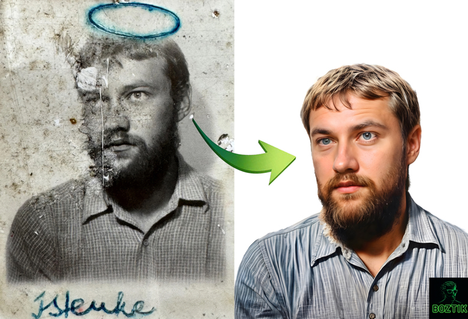
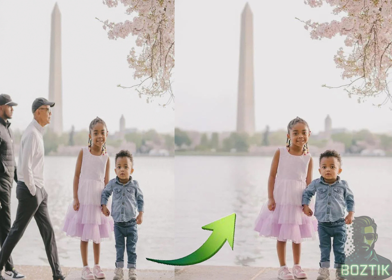
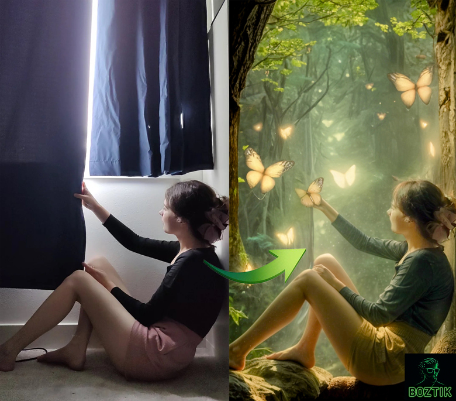
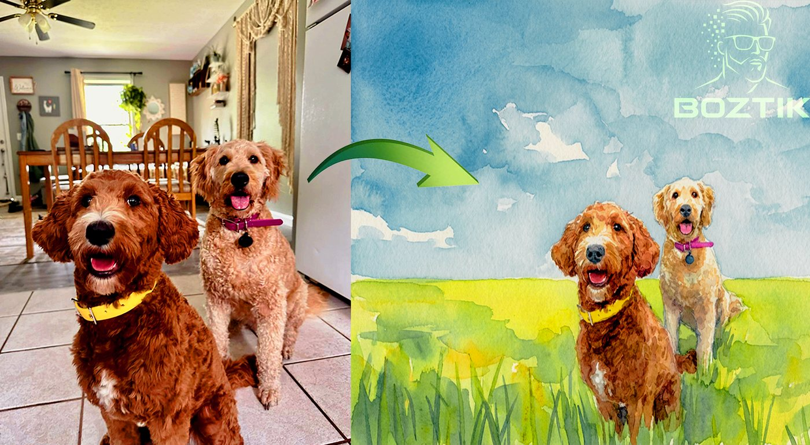
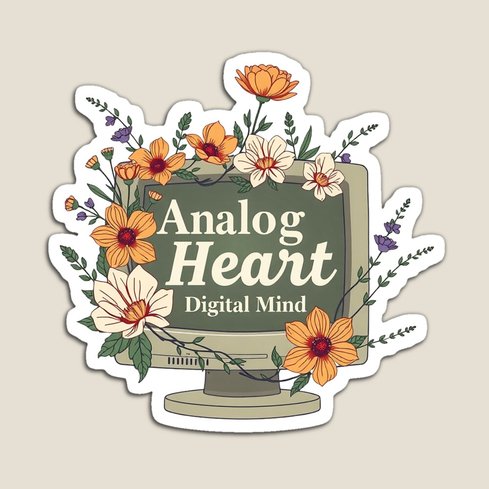
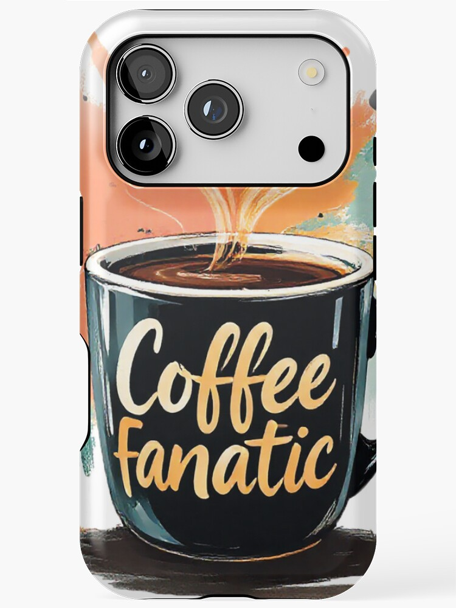
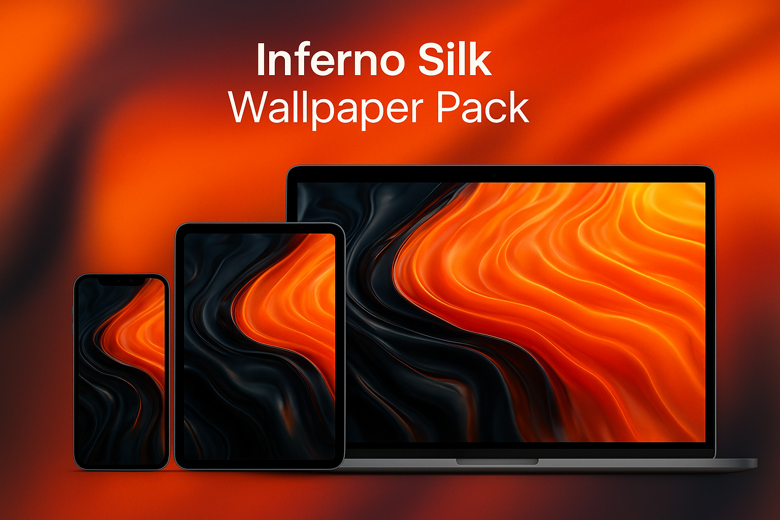
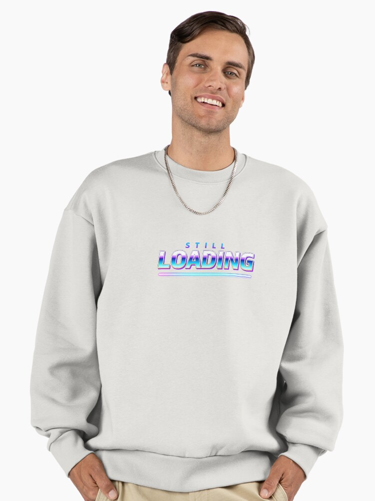
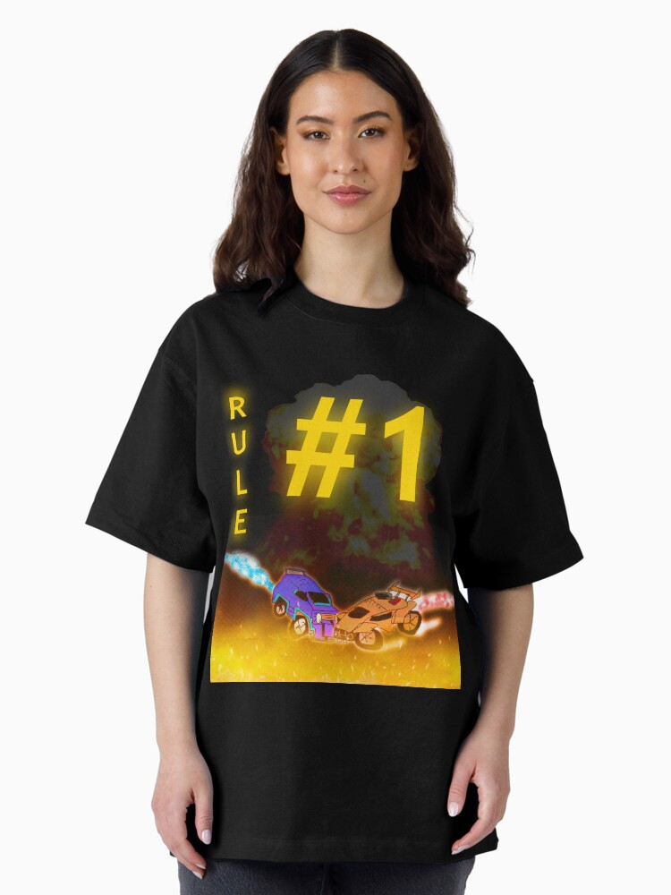

Independent creative studio
Photos restored. Creative tools built. Skills shared clearly.
Boztik is an independent creative studio focused on thoughtful photo restoration, practical image-editing services, free browser tools and straightforward tutorials. We also make original designs, available separately through Boztik Stores.

It started with the edit. The rest grew out of it.
Boztik began with hands-on photo editing and restoration. The browser tools came from the problems that work kept throwing up, and the original designs now sit beside it under the same name.
-
Photo editing and restoration
Restoration, retouching, object removal and compositing for personal and business images.
-
Free image tools
An Image Inspector and a Creative Assistant that run in your browser, plus the Creative Toolkit extension. No account needed.
-
Original designs
Merchandise on Redbubble and TeePublic, and wallpaper packs on Ko-fi.
Real edits, shown before and after.
Each project pairs the original with the finished result and a note on what changed. The full portfolio has more.



BOZTIKBUSINESS SPOTLIGHT
Explore all profiles
A CURATED LOOK AT INDEPENDENT WORK
Good work deserves to be discovered.
Meet independent businesses, creators and service providers through the people behind the work. Explore a Boztik profile, then visit the business directly.
Want your business in the spotlight?
Request a listing
We showcase independent businesses, professionals, creators and services worth discovering.
Wear it. Stick it. Set it as your wallpaper.
A selection from the Boztik shops. Merchandise lives on Redbubble and TeePublic, and wallpaper packs are on Ko-fi. The Stores page has the wider range.

Merchandise
Merchandise
Wallpaper pack
Merchandise
Merchandise Wallpaper pack
Wallpaper pack
Loading the latest designs.
A new batch of designs is on the way.
The shops are open in the meantime.
Go straight to a shop: Redbubble TeePublic Wallpapers on Ko-fi
INTRODUCING BOZTIK CREATIVE STUDIO
Your creative workflow, in one place.
Inspect images, build better creative prompts, plan canvas dimensions and get practical editing guidance — all inside a fast, focused browser workspace.
- Image analysis that stays on your device
- Prompt builder for clearer creative direction
- Canvas presets and practical editing references
Free to use · No account required · No image uploads
BOZTIK / CREATIVE STUDIOWORKSPACE PREVIEW
01020304
IMAGE ANALYSISInspect an imageUnderstand your file before you edit.
DIMENSIONS2400 × 1600ASPECT RATIO3:2FILE SIZE3.8 MB
COLOUR PALETTE
A practical workspace for the details behind better creative work.

MAJOR UPDATE · CREATIVE TOOLKIT 3.3.0
Image Inspector is now the main hub.
One powerful workspace. All your creative tools.
Boztik Creative Toolkit is a free Chrome and Edge extension for people who work with images. Open Image Inspector as your starting point, then move into image and colour tools, Image Lab, font detection and capture, or the AI Creative Assistant.
- New Image Inspector hub
- Floating Boztik Button: image details on hover
- Smarter right-click menu
- Image Tools and Colour Tools
- Image Lab: resize, compress and convert
- Font detection and capture tools
- Optional AI Creative Assistant
- Opt-in site permissions and local processing where supported
Free to use · Version 3.3.0 · Chrome and Edge · No Boztik account needed
Plain-language guides on restoration and retouching.
Short reads from the same desk the editing work comes from.
- Restoration How Professional Photo Restoration Works What actually gets repaired in a damaged print, and why restoring too much is its own mistake.
- Retouching How to Remove Unwanted Objects From a Photograph Removal is really reconstruction. What separates an invisible fix from an obvious one.
- Comparison AI Photo Editing vs Professional Photo Editing Where automatic tools genuinely help, and where a human editor still earns the difference.
Also on Boztik
Boztik Deliver
Send finished work to clients through private links that expire automatically. No account needed.
About Boztik
More about the person and the work behind the studio.
Have a photo that deserves better?
Restoration, retouching, object removal or something custom. Pricing is fair and flexible, and you decide what the finished work is worth.